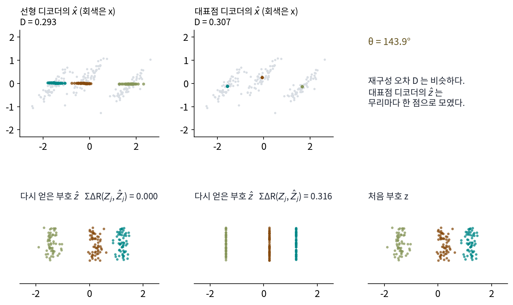
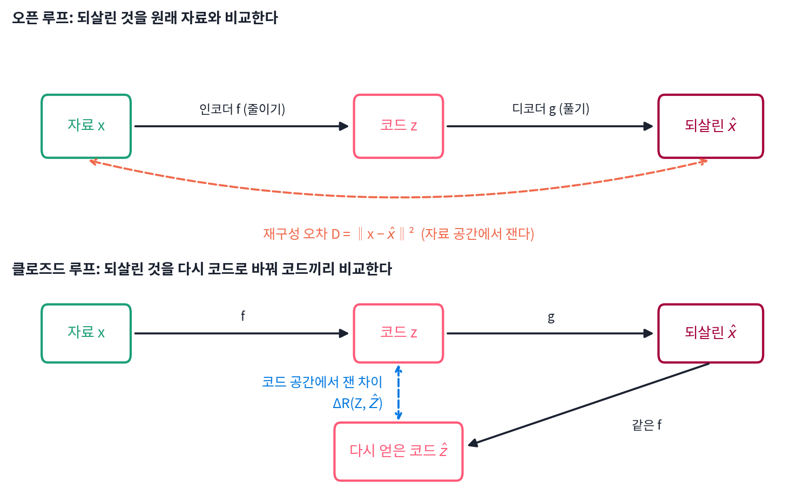
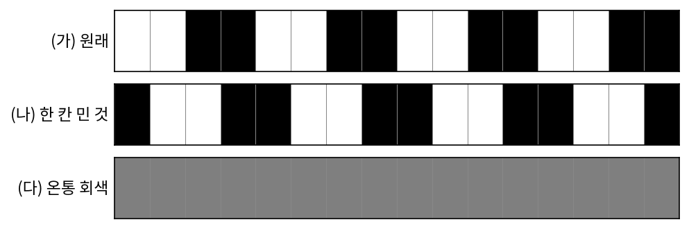

오토인코더와 클로즈드 루프: 되살린 것을 다시 압축하기
자기 일관: 되살린 것을 다시 압축해 코드끼리 비교한다
오픈 루프는 되살린 것을 원래 자료와 비교하므로, 자료 공간에서 「얼마나 비슷한가」를 잴 잣대가 있어야 한다. 평면의 점이라면 제곱 거리가 그럴듯한 잣대지만 그림에서는 다르다. 한 화소씩 옆으로 민 사진은 사람 눈에는 같은 사진인데 화소별 제곱 거리로는 꽤 멀고, 모든 사진의 평균처럼 흐릿한 그림은 어느 사진과도 제곱 거리가 그리 멀지 않다. 자료 공간의 잣대가 믿을 만하지 않다면, 되살린 것이 잘 되살아났는지를 다른 곳에서 잴 수는 없을까? 마침 손에는 자료를 코드로 바꾸는 인코더가 있다.
역사: 결과를 재어 다시 들여보내는 고리
제어 공학은 기계를 움직이는 방식을 둘로 나눈다. 정해 둔 대로만 움직이는 방식이 오픈 루프여서, 타이머로 3분을 맞춘 토스터는 빵이 얼마나 구워졌는지 보지 않는다. 결과를 재어 목표와의 차이를 다시 입력으로 들여보내는 방식이 클로즈드 루프(되먹임)다. 온도 조절기는 방 온도를 재어 목표보다 낮으면 보일러를 켠다.
1948년 수학자 위너(Norbert Wiener)는 『사이버네틱스: 동물과 기계의 제어와 통신(Cybernetics: Or Control and Communication in the Animal and the Machine)』을 파리의 에르만 출판사에서 내고, 같은 해 미국판도 냈다. 그는 되먹임을 기계와 생물에 두루 통하는 원리로 내세웠고, 서론에서 배의 조타 기관을 일찍 발달한 되먹임 장치의 하나로 들었다. 이 책은 되먹임, 정보, 제어, 안정성 같은 낱말을 공학 밖으로 널리 퍼뜨렸다.
오토인코더에 「클로즈드 루프」라는 이름을 붙인 다이(Xili Dai)와 동료들의 논문(2021년 arXiv, 2022년 학술지 《엔트로피》)은 초록에서 이 생각이 「제어 시스템의 클로즈드 루프 오차 되먹임」에서 영감을 받았다고 적었다. 이 논문이 위너의 이름을 들어 출처로 밝히지는 않는다. 이름은 제어 공학에서 왔고, 위너는 그 낱말을 널리 알린 사람 가운데 하나라고 말할 수 있는 데까지다.
평균만 그리는 디코더
길쭉한 덩어리 셋으로 된 점 180개를 수 하나로 줄이는 오토인코더로 돌아가자. 덩어리마다의 점들을 한 클러스터로 보고, 인코더 각도를 클러스터가 잘 갈리는 θ = 143.9°에 둔다. 디코더는 두 가지로 만든다. 하나는 수 하나짜리 오토인코더에서 쓴 선형 디코더(재구성 오차가 가장 작게 고른 방향 v를 곱하는) x̂ = vz다. 다른 하나는 코드 z를 받으면 그 수와 가장 가까운 클러스터를 골라, 그 클러스터의 평균 점을 내놓는 대표점 디코더다. 대표점 디코더가 그리는 점은 언제나 그럴듯한 자리(어느 덩어리의 한가운데)에 있지만, 같은 덩어리의 점은 모두 같은 점으로 되살린다. 흐릿한 평균 그림만 그리는 생성기가 하는 일과 같다.
재구성 오차는 선형 디코더가 0.293, 대표점 디코더가 0.307이어서 오픈 루프로는 둘이 거의 비긴다. 이제 되살린 x̂를 같은 인코더에 한 번 더 넣어 코드 ẑ = uᵀx̂를 얻고, 처음 코드 z와 비교한다. 선형 디코더의 ẑ는 z와 똑같다. 대표점 디코더의 ẑ는 클러스터마다 한 점에 모여, z와 평균 0.112만큼 어긋난다. 클러스터 안의 코딩 레이트 R(Ẑⱼ)는 셋 다 0이 되었는데, 처음 코드에서는 0.715, 0.804, 0.872비트였다.

클러스터 하나의 처음 코드 Zⱼ와 다시 얻은 코드 Ẑⱼ가 얼마나 다른지도 코딩 레이트로 잴 수 있다. 둘을 한데 모아 적는 비트에서 따로 적는 비트의 평균을 빼면 되는데, 두 모음이 똑같으면 모아도 늘 게 없으니 0이고 서로 다른 곳을 차지할수록 커진다.
세 클러스터에서 더하면 선형 디코더는 0, 대표점 디코더는 0.316비트다. 되살린 것을 다시 인코딩했을 때 처음과 같은 코드가 나오는 성질, 곧 인코더 f와 디코더 g가 f(g(z)) = z를 지키는 성질을 자기 일관 (되살린 것을 다시 압축하면 같은 코드가 나오는 성질, self-consistency)이라 한다. 그리고 이렇게 되살린 것을 인코더로 되돌려 보내 코드 공간에서 차이를 재는 방식을 오픈 루프에 맞세워 클로즈드 루프라 부른다. 차이를 재는 곳이 자료 공간에서 코드 공간으로 옮겨 갔다는 것이 클로즈드 루프의 요점이다. 그림의 화소 거리처럼 믿기 어려운 잣대를 쓰지 않고, 압축기가 자기 눈으로 자기 결과를 검사한다.

ML에서: 사이클 일관성
2017년 주(Jun-Yan Zhu)·박태성(Taesung Park)·이솔라(Phillip Isola)·에프로스(Alexei Efros)의 CycleGAN(ICCV 2017)은 짝지은 예 없이 말 사진을 얼룩말 사진으로 바꾸는 것 같은 그림 옮기기를 배웠다. 옮기는 함수 G 하나만으로는 답이 너무 많아서, 거꾸로 옮기는 함수 F를 함께 두고 F(G(x))가 x로 돌아오게 하는 사이클 일관성 손실을 더했다. 갔다가 돌아오면 제자리여야 한다는 생각은 자기 일관과 같다. 다만 CycleGAN은 돌아온 그림을 원래 그림과 화소의 차이(절댓값 거리)로 비교하므로 차이를 재는 곳이 자료 공간이고, 클로즈드 루프는 코드 공간에서 잰다. 다이 외의 논문은 BiGAN·ALI 처럼 인코더와 디코더가 서로 거꾸로 가게 하는 방법들이 그림과 특징을 가릴 판별기 신경망을 따로 둔다는 점을 들고, 자기들의 방법은 인코더와 디코더 두 신경망만 쓰며 자료 공간의 거리 대신 코드 Z와 Ẑ 사이의 코딩 레이트 감소를 두 분포의 거리로 쓴다고 적었다. 자료 공간에서는 분포 사이의 거리를 얻기 어렵기 때문이다.
문제 4. 몽타주를 다시 묘사하기
목격자가 사람 여덟을 키(작음·보통·큼), 머리(짧음·긴), 안경(있음·없음), 나이대(20대·30대·40대) 네 항목으로 묘사했다. 묘사는 다음과 같다: (큼, 짧음, 있음, 20대), (보통, 짧음, 없음, 30대), (작음, 긴, 있음, 30대), (보통, 긴, 없음, 40대), (큼, 짧음, 없음, 30대), (보통, 짧음, 없음, 20대), (작음, 짧음, 있음, 40대), (보통, 긴, 없음, 30대). 몽타주 화가가 묘사를 받아 얼굴을 그리면, 다른 목격자가 그 그림을 보고 다시 네 항목으로 묘사한다. 화가 갑은 묘사대로 그리고, 화가 을은 누구를 묘사하든 항목마다 가장 흔한 값으로 「평균 얼굴」을 그린다. (가) 을의 그림을 다시 묘사하면 처음 묘사와 항목이 몇 개나 같은가? (나) 두 화가의 그림이 얼마나 원래 얼굴을 닮았는지 사진으로 비교할 수 없다면, 둘을 무엇으로 가릴 수 있는가?

을이 그린 얼굴은 항목마다 가장 흔한 값이에요. 키는 보통이 넷, 머리는 짧음이 다섯, 안경은 없음이 다섯, 나이는 30대가 넷이니까 늘 (보통, 짧음, 없음, 30대)예요. 사람마다 같은 항목을 세면 1, 4, 1, 2, 3, 3, 1, 3이고 합이 18개, 32개 가운데 56.2%네요. 절반 넘게 맞으니까 나쁘지 않은데요?

절반 넘게 맞힌 묘사로 범인을 찾을 수 있을까요? 다시 묘사한 여덟 장을 나란히 놓으면 어떻게 보이죠?

여덟 장이 다 똑같아요. 처음 묘사는 여덟 가지가 다 달랐는데, 다시 묘사한 건 한 가지예요. 이걸로는 누가 누군지 못 가려요.

갑은 묘사대로 그렸으니까 다시 묘사하면 처음 묘사가 그대로 나오겠지. (나)가 그 말이야. 원래 얼굴 사진이 없어도, 묘사 → 그림 → 다시 묘사가 같은 묘사로 돌아오는지만 보면 화가를 가릴 수 있어.

그리고 56.2%라는 숫자는 을의 문제를 다 보여 주지 못해. 을의 다시 묘사한 묘사는 서로 다른 게 하나도 없다는 게 진짜 문제야. 묘사 하나하나가 맞는지보다 묘사들이 얼마나 다양하게 퍼져 있는지를 봐야 해.

발표 자료를 친구한테 설명하고 그 친구한테 다시 설명해 보라고 하면, 내가 한 말이 그대로 돌아오는지로 설명이 잘 됐는지 알 수 있잖아요. 친구가 누가 발표하든 「대충 좋은 내용이었어」라고만 하면 그건 안 들은 거고요.
문제 5. 선형 디코더는 늘 자기 일관인가
인코더 z = uᵀx(u 는 단위 벡터)에 최소제곱 선형 디코더 x̂ = v z 를 붙인다. 점들의 2차 모멘트 행렬을 Σ 라 하면 v = Σu/(uᵀΣu)다. (가) 다시 인코딩한 ẑ = uᵀx̂ 는 z 와 같은가? (나) θ = 143.9°에서 v 대신 u 자체를 디코더 방향으로 쓰면(같은 직선 위에 다시 놓기) 재구성 오차는 0.888이다. 이 디코더는 자기 일관인가? (다) v 를 0.8배로 줄인 디코더는 어떤가?
(다)부터 돌려 볼게요. 0.8 v 면 |z − ẑ| 평균이 0.189, ΣΔR(Zⱼ, Ẑⱼ)가 0.750비트예요. 자기 일관이 깨졌네요. (가)는 v 가 최소제곱으로 고른 거니까 당연히 같겠죠? 재구성을 제일 잘하니까요.
재구성을 제일 잘하면 자기 일관이라… 그럼 (나)의 u 는 재구성을 훨씬 못하는데요. 0.888이니까 세 배예요. 이 디코더는 자기 일관이 깨질까요?

돌려 보니 u 로도 |z − ẑ|가 0이에요. 재구성은 못하는데 자기 일관은 지켜요.

재구성이 좋든 나쁘든 0이 나온다면, 최소제곱이라서 같은 건 아니겠네. 일단 ẑ 를 펼쳐 볼게. ẑ = uᵀ(v z) = (uᵀv) z. 어, 그럼 uᵀv 가 1이냐만 보면 되는 거야?
그렇게 줄였으면 하나씩 넣어 보면 되겠네요. 디코더 방향이 u 자체면요?
u 는 단위 벡터니까 uᵀu = 1이요. 그래서 0이 나왔구나.
v = Σu/(uᵀΣu)를 넣으면 uᵀv = uᵀΣu/uᵀΣu = 1이고, 0.8 v 면 0.8이야. 분모가 1이 되게 맞춰져 있었네.

그러니까 자기 일관은 「디코더가 그린 점을 인코더가 같은 수로 읽는다」는 조건 하나야. 재구성을 잘한다는 것과는 다른 조건이고.
그럼 v 에 u 와 수직인 방향을 더하면 어떻게 될까요?
uᵀ 를 곱하면 그 방향은 0이 되니까 uᵀv 는 그대로 1이에요. 아무리 더해도 자기 일관이에요. 그런데 그 방향으로 엉뚱하게 그리면 재구성은 나빠지겠네요.

맞아요. 자기 일관은 좋은 오토인코더가 지켜야 할 조건이지, 그것만으로 좋은 오토인코더가 되지는 않아요. 그래서 클로즈드 루프는 자기 일관만 보지 않고, 코드의 클러스터가 잘 갈리는지(ΔR(Z))도 함께 봐요.

함수의 합성으로 보면 f(g(z)) = z 는 f ∘ g 가 항등 함수라는 말이에요. 그러면 디코더 g 가 서로 다른 코드를 서로 다른 점으로 보낸다(단사)는 건 알 수 있지만, 그 점이 원래 자료를 닮았는지는 알 수 없어요. 갔다 돌아오는 조건 하나로는 다른 성질까지 따라오지 않아요.
문제 6. 한 칸 민 그림과 회색 그림

16칸짜리 그림 (가) 0011 0011 0011 0011(1이 검은 칸), (나) (가)를 오른쪽으로 한 칸 민 것, (다) 모든 칸이 0.5인 회색이 있다. (가)를 되살린 결과로 (나)와 (다)가 나왔다고 하자. (가)와의 화소별 제곱 거리는 각각 얼마인가? 화소 거리로 디코더를 고르면 어느 쪽을 고르는가? 「네 칸마다 되풀이되는 줄무늬의 세기」라는 수 하나를 코드로 쓰면 어떻게 되는가?
(가)와 (나)는 16칸 가운데 8칸이 달라서 제곱 거리 8이에요. (다)는 모든 칸이 0.5씩 달라서 16 × 0.25 = 4. 회색이 더 가까워요. 화소 거리로는 회색을 내놓는 디코더가 이겨요.
회색 그림이 줄무늬를 더 잘 되살렸다고 할 수 있을까요?

아니요. 줄무늬가 아예 없어졌는데요. 한 칸 민 건 사람이 보면 같은 무늬고요.
그럼 코드로 재 보자. 네 칸 주기 줄무늬의 세기를 푸리에 계수의 크기로 재면 (가)와 (나)는 둘 다 0.354, (다)는 0이야. 미는 것은 위상만 바꾸고 크기는 그대로 두니까.
코드 공간에서 재면 (나)는 거리 0, (다)는 0.354만큼 멀어. 화소 거리랑 순위가 뒤집혔어.
사이클 일관성처럼 돌아온 그림을 화소로 비교하면 흐릿한 평균 그림이 점수를 받기 쉬워요. 무엇을 같다고 볼지를 담은 코드로 비교하면 그 점수가 사라지고요. 물론 그 코드를 무엇으로 정하느냐가 다시 물음이 돼요. 여기서는 사람이 줄무늬의 세기를 골라 줬는데, 클로즈드 루프는 그 코드를 낼 인코더도 함께 배워야 해요.
보고서를 글자 단위로 비교하는 표절 검사기는 문장 순서만 바꿔도 다르다고 하고, 빈 보고서는 오히려 덜 다르다고 할 수도 있겠네요. 내용으로 비교해야 해요.